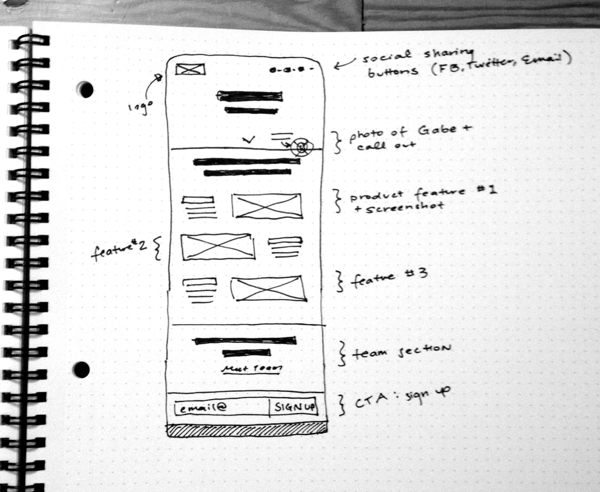
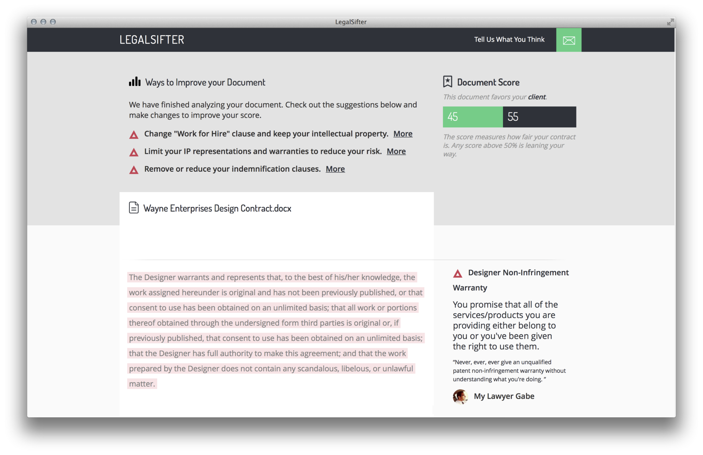
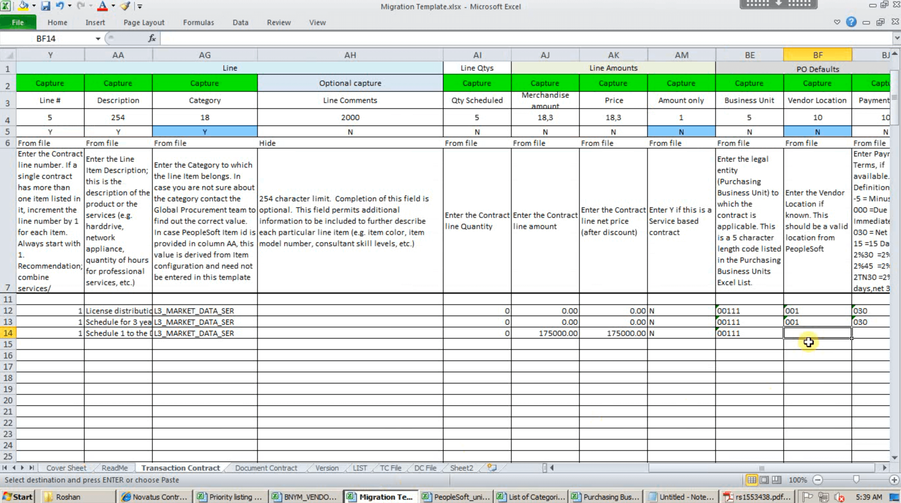
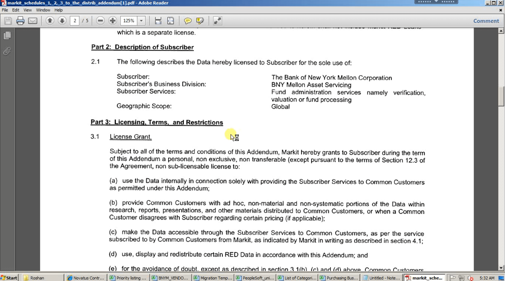
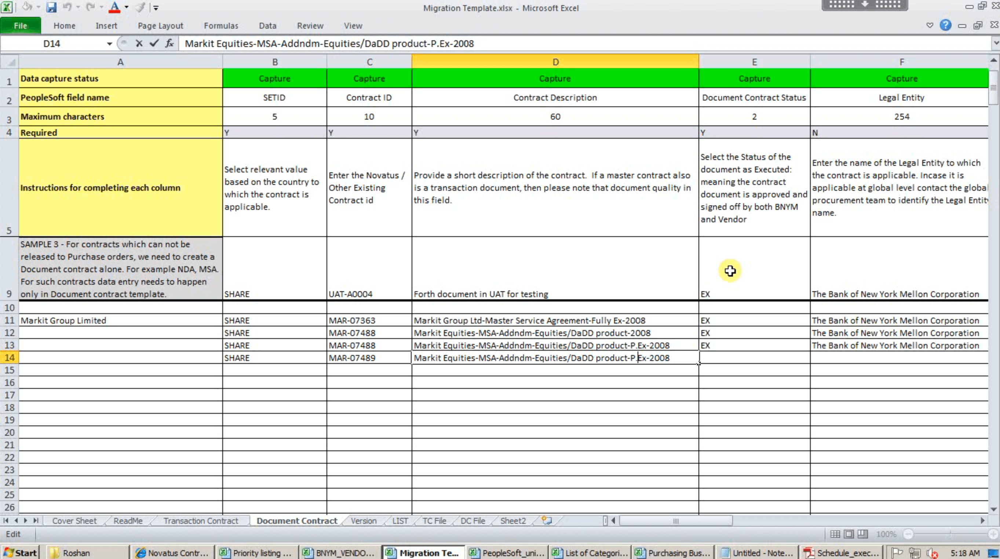
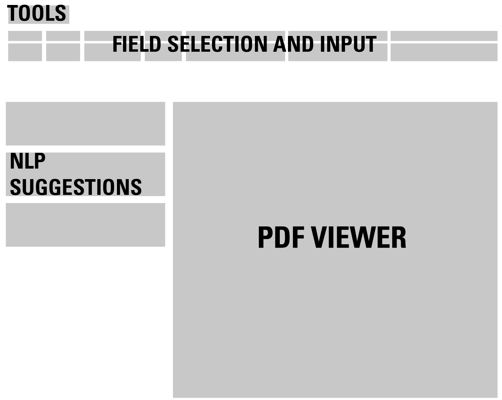
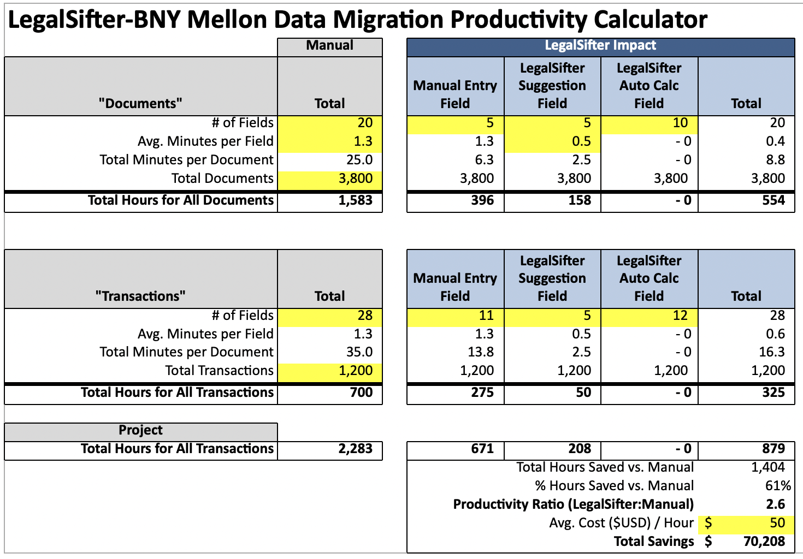
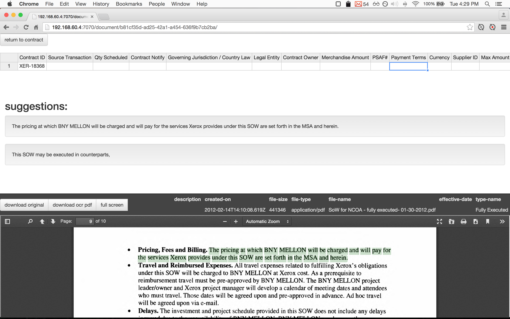

LegalSifter: From Consumer App to B2B
After running a design firm for less than a year, there were several occasions when a project would come in and it didn’t make sense to hire a lawyer. We’d sign contracts with no legal review thinking we’d save a few thousand dollars. But buried deep in a multi-page dense contract, there would be an innocuous phrase.
“payable no later than net 30 days to Consultant, upon the completion … and subject to test and acceptance”

The phrase didn’t raise any red flags in my head, but 6 months after the project finished, the final deliverables were waiting for acceptance. After talking to an advocate inside the company, I learned that several consulting contracts had been in the “acceptance” phase for over two years. There had to be a better solution.
Research
To make sure this wasn’t just a “me problem”, I started crawling my contacts list looking for any business owners to talk to talk. Those conversations were bucketed based on business size, and findings and relationships spawned from those initial conversations giving me confidence that there was a market need.
Startups: Met with dozens of startup founders and built relationships with local incubators.
Common Questions:
- Should I sign this contract?
- When does IP transfer on this project?
- Who needs to sign the project NDA?
- Does my lawyer know the current trends?
SMBs: Several design firms participated in our pilot program.
Common Questions:
- Are we taking on too much liability?
- Which contracts auto-renew?
- Which projects have confidentiality clauses?
- Which contracts have the standard assignment clauses?
Enterprise: Worked with Giant Eagle and Fedex Ground to build prototypes focusing on enterprise needs. We estimated LegalSifter could replace $8 Billion in contract management labor costs.
Common Questions:
- Where are our highest risk areas?
- How many contracts are we currently in?
- How do we manage liability across units?
- How many leases are up for renewal this year?
Minimize Technical Risk: There was also a need for extensive technical research resulting in a few core foci in the tech stack:
- Scanned PDFs: Use post-processing rules and heuristics to clean up poor scans and fill in missing data.
- NLP: Take semantic approach, grow ontologies iteratively, and store data in a format that will support later inference engine.
- Inference: Use Apache Jena or Sesame to power inference engine.
Solution

From values, as much as from research, the plan was to focus on small businesses as our beachhead market. We partnered with Gabe Levine, who with Mike Monteiro coined the term “[F*** You Pay Me](https://www.youtube.com/watch?v=jVkLVRt6c1U)” – a short lived internet meme in the design world. The solution was simple. Gabe manually scored contracts and gave us a rubric for scoring which fed the underlying AI models. People would upload client contracts to our platform, and we’d extract terms, grade the contract based on favorability, and give expert advice within seconds. The LegalSifter Scorecard was born:

We rushed a polished web-app out the door in time for a TechCrunch launch article. The response from freelance designers and developers was 100% positive, but responses from lawyers in the wild were the inverse. During the first day, we had over 4,000 contracts uploaded to our platform, and just as many negative responses from lawyers. So much so that TechCrunch shut down the comments section. To make things worse, Gabe pulled out and so did our corporate law firm retained for our defense.

The Pivot
By this point LegalSifter had 5 full time employees. We had a week of huge highs and lows, and after talking with a key investor, we realized that there were still markets to go after. Our investor had some friends at BNYM dealing with the same issues, but at a scale orders of magnitude greater. The Dodd-Frank Act deadline was coming close, and large banking institutions had spent years trying to wrangle their contracts with little success. They had teams in Pune India with dozens of full-time employees trying as fast as they could to make sense of their tens of thousands of deals.
|  |  |  |
Going from mass market, to a large enterprise engagement, we decided to mix the previous research findings with something much more in depth for our new client. We reviewed hours of screen recordings to understand the exact workflow of the people in Pune.
We knew our client wouldn’t accept the output straight from a small AI startup, so we built a three-pane design that would allow people to view the original contract, the extracted legal terms, alongside the extracted values from our NLP engine. 
Since we already had the videos, we could calculate how long each task took to complete and developed a Taylor-esque concept of work:

Doing the CEO work of raising capital, negotiating with our current client, while managing the dev team and doing the design work, pixel perfection had to be foregone, but we got the app out the door to save our fledgeling startup and to fight another fight another day.
Final Working App Deployed to the Team in Pune

It wasn’t pretty, but we had a working system that ingested tens of thousands of contracts, automatically extracted common terms like Governing Jurisdiction and Start Date, and gave suggested interpretations of more complex legal language. When a user clicked on a term the system identified, the user would immediately be taken to that text inside of the PDF for review.
The platform was a huge success and our first client, BYNMellon, signed a year long contract giving us our first MRR.